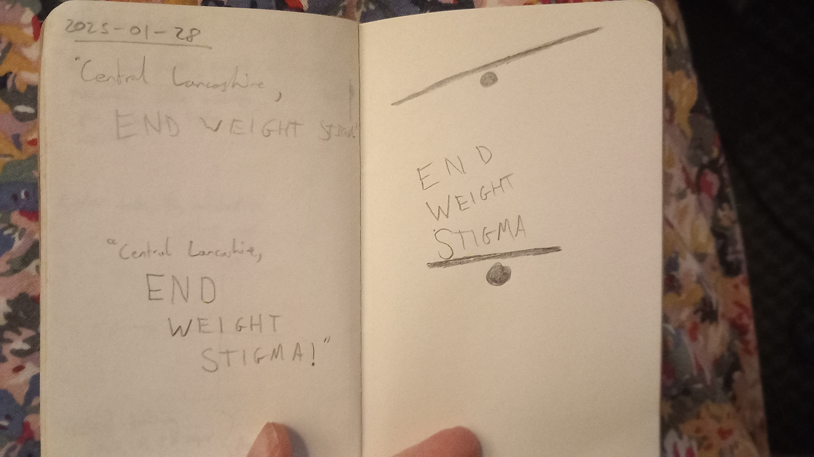

Lots more work on writing code today to build the website. I feel blocked by the presentation. I need to be able to see the end result and build it easily, so I can confidently start writing and publishing. Big milestone achieved today getting this to work how it is so far. No doubt there will be issues down the line like citations, but I know I can get pandoc to handle that, so I am not worried. Now I can start writing. I think I’m happy with the index.
After some improvements to typography and spacing, I am ready to work on a new logo: a reusable visual asset I can use on all our publications, including for recruitment and social media, etc.
